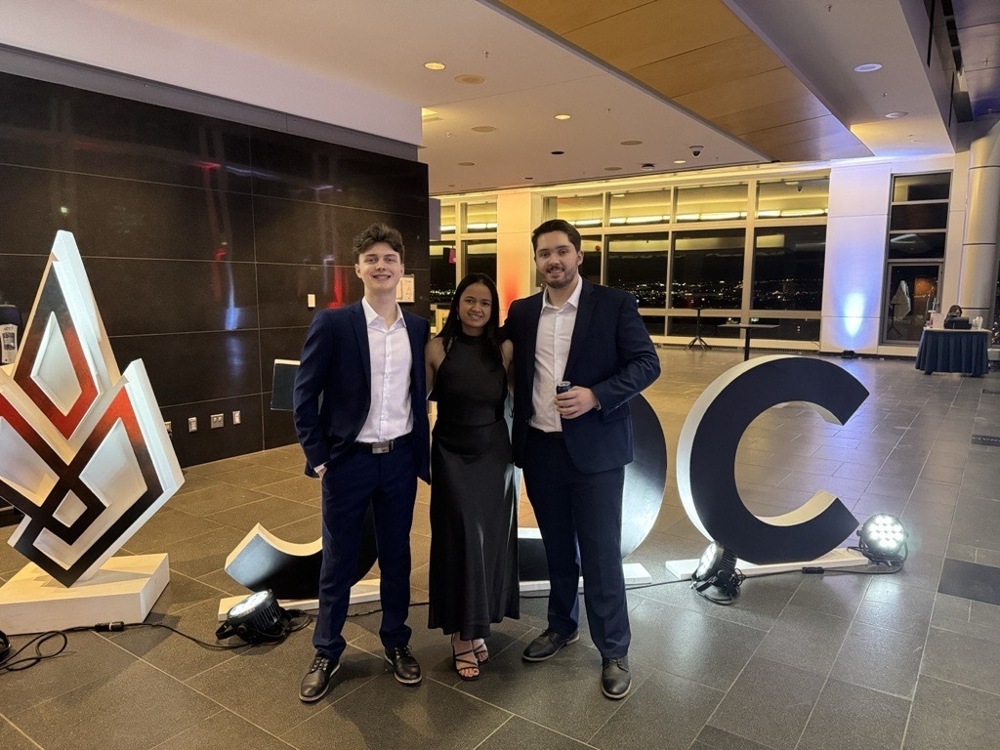

HIGHLIGHT
Jeux du Commerce
Competitions de Pitch inter-universités : présentations - diaporamas - études de cas réels
En savoir plusPortfolio numérique • Parcours • Compétences
Originaire de Madagascar où l'accès à la technologie est encore un défi, j'ai vite constaté les lacunes potentiels à combler au sein de la communauté. Dans cet objectif, j'ai orienté mon parcours universitaire vers un baccalauréat en administration des affaires, spécialité technologie des affaires. À travers différents travaux et expériences académiques, j'ai appris à être à l'aide devant un public, à coordoner mais aussi à collaborer dans des initiatives.


Engagement académique, professionnel et bénévolat
HIGHLIGHT
Competitions de Pitch inter-universités : présentations - diaporamas - études de cas réels
En savoir plus

HIGHLIGHT
Mes valeurs - Mes compétences acquises - mon implication
En savoir plus